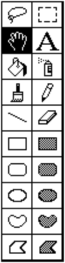

Engineer and designer building creative tools, social infrastructure, and
harnesses.
My work is driven by deep appreciation for digital materials and human
complexity.
Founding member and CTO of vibe-coding platform with millions of users. Shipped APIs for agents, productionizing research for cost, speed, and steerability. Designed, tested, and delivered RL data for third-party clients.
Taught "Hand Held", a 14 week project based curriculum on creative tool design and interface implementation. Alumni have gone on to work at Anthropic, Meta, Bytedance, Ramp, Perplexity.
Product design & social algorithm for game development app & social media network. (Scratch x TikTok)
Built new tools for clients like New Computer, Portola, ClassDojo,
Artbreeder, Sprout.place.
Researched and built composable system UI for Fuchsia, a capability-based
operating system.
Worked across the stack, from kernel engineers to user researchers, to
bring up a new OS.
Full-stack features on an open-source error-tracking product; maintained JavaScript SDKs raven-js and raven-node; helped stand up dev-rel, sales, success, and marketing as the company grew 10×.
TypeScript SDK / agent harness for playing runescape, plus a popular benchmark suite evaluating frontier AI coding agents on gameplay tasks. Active community of players building agent swarms.
Particle-simulation drawing game and social network built with Rust, WebAssembly, WebGL, and Postgres. 30M+ page views, 2M+ uploaded artworks.
Super-smooth fast ASMR image similarity explorer for Are.na images. Powered by SigLIP and pgvector.
Twitter bot which scrapes the New York Times and posts first-ever occurrences of words, plus their context for an audience of 200k+ followers. Covered by the NYT, Newsweek and IEEE Spectrum.